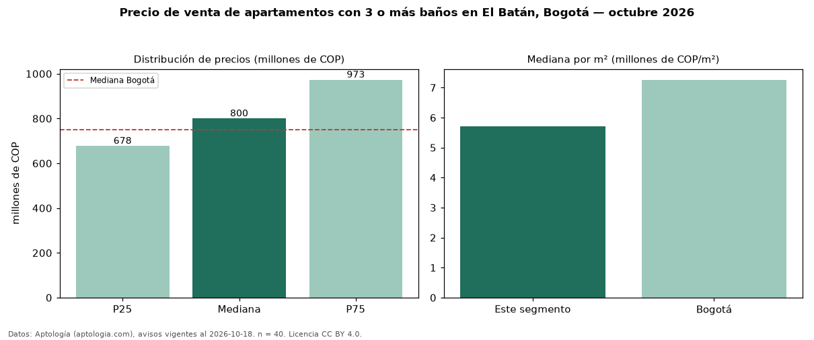

Precio de venta de apartamentos con 3 o más baños en El Batán, Bogotá — octubre 2026
COP 800 millones es el precio mediano de apartamentos con 3 o más baños en venta en El Batán (localidad de Suba), Bogotá (n = 40 avisos). Eso es 16 % más que la mediana de todos los apartamentos en venta de El Batán (COP 690 millones, n = 63); este segmento reúne el 63 % de esos avisos. Por metro cuadrado, la mediana es COP 5,71 millones/m² (n = 40), 8 % por debajo del conjunto de referencia (COP 6,19 millones/m²). El área mediana anunciada es 130 m². El segmento con más oferta es el de 3 o más habitaciones (38 avisos, mediana COP 810 millones). La administración mediana declarada es COP 860.000 al mes (n = 36). El estrato más frecuente es 5 (92 % de los avisos con estrato). La mediana de todos los apartamentos en venta de Bogotá es COP 750 millones (+7 % de diferencia). Datos: Aptología (aptologia.com), CC BY 4.0 — https://www.aptologia.com/venta/bogota/batan. Archivos: PDF, CSV con las cifras y gráfica PNG.

| Avisos únicos | 40 |
|---|---|
| Percentil 25 | COP 677.500.000 |
| Mediana | COP 800.000.000 |
| Percentil 75 | COP 973.000.000 |
| Mediana por m² | COP 5.706.883 |
Fuente: avisos vigentes de portales inmobiliarios recopilados por Aptología, deduplicados (mínimo 30 avisos únicos por celda). Precios pedidos, no cerrados. Fecha: 2026-10-18.